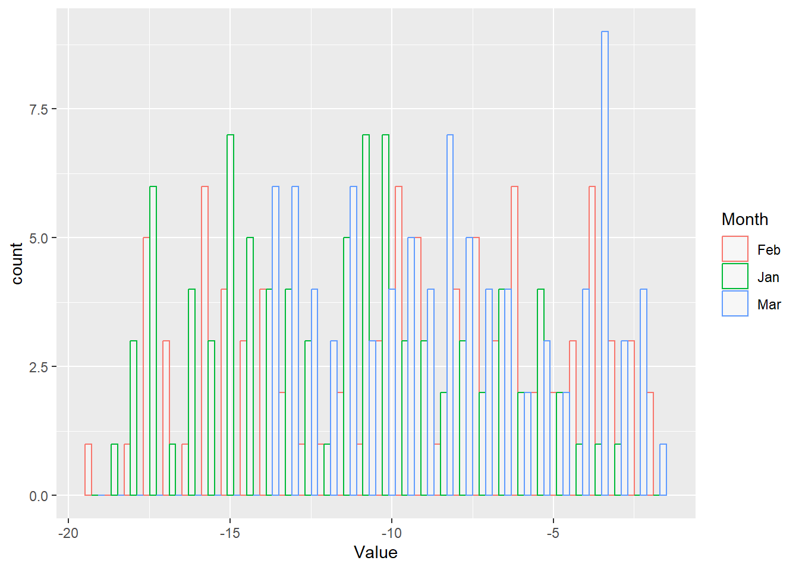

In this section, we will learn about some basic R operators that are used to perform operations on values and variables. Some most commonly used operators are shown in the table below.
2+4+7# Sum
[1] 13
# Order of operation1/2*3+4-5
[1] 0.5
1/2*(3+4-5)
[1] 1
1/(2*(3+4-5))
[1] 0.25
1/(2*3+4-5)
[1] 0.2
## Notice how output changes with the placement of operators# Other operators:2^3
[1] 8
log(10)
[1] 2.302585
sqrt(4)
[1] 2
pi
[1] 3.141593
# Clear the Environmentrm(list=ls())
2.2 1.2. Basic data operations
In this section, we will create some vector data and apply built-in operations to examine the properties of a dataset.
# The "is equal to" or "assignment operator in R is "<-" or "=" # Generate sample datadata<-c(1,4,2,3,9)# rbind combines data by rows, and hence "r"bind# cbind combines data by columns, and hence "c"bind# Checking the properties of a dataset. Note: the na.rm argument ignores NA values in the dataset.data=rbind(1,4,2,3,9) dim(data) # [5,1]: 5 rows, 1 column
[1] 5 1
data[2,1] # Show the value in row 2, column 1
[1] 4
data[c(2:5),1] # Show a range of values in column 1
[1] 4 2 3 9
mean(data, na.rm=T) # Mean
[1] 3.8
max(data) # Maximum
[1] 9
min(data) # Minimum
[1] 1
sd(data) # Standard deviation
[1] 3.114482
var(data) # Variance
[,1]
[1,] 9.7
summary(data)
V1
Min. :1.0
1st Qu.:2.0
Median :3.0
Mean :3.8
3rd Qu.:4.0
Max. :9.0
str(data) # Prints structure of data
num [1:5, 1] 1 4 2 3 9
head(data) # Returns the 1st 6 items in the object
[,1]
[1,] 1
[2,] 4
[3,] 2
[4,] 3
[5,] 9
head(data, 2) # Print first 2
[,1]
[1,] 1
[2,] 4
tail(data, 2) # Print last 2
[,1]
[4,] 3
[5,] 9
# Do the same, but with "c()" instead of "rbind"data=c(1,4,2,3,9) dim(data) # Note: dim is NULL
NULL
length(data) # Length of a dataset is the number of variables (columns)
[1] 5
data[2] # This should give you 4
[1] 4
# Other operators work in the same waymean(data) # Mean
[1] 3.8
max(data) # Maximum
[1] 9
min(data) # Minimum
[1] 1
sd(data) # Standard deviation
[1] 3.114482
var(data) # Variance
[1] 9.7
# Text datadata=c("TAMU","GEOS","BAEN","WMHS") data # View
[1] "TAMU" "GEOS" "BAEN" "WMHS"
data[1]
[1] "TAMU"
# Mixed datadata=c(1,"GEOS",10,"WMHS") # All data is treated as text if one value is textdata[3] # Note how output is in quotes i.e. "10"
[1] "10"
2.3 1.3. Data types
In R, data is stored as an “array”, which can be 1-dimensional or 2-dimensional. A 1-D array is called a “vector” and a 2-D array is a “matrix”. A table in R is called a “data frame” and a “list” is a container to hold a variety of data types. In this section, we will learn how to create matrices, lists and data frames in R.
# Lets make a random matrixtest_mat =matrix( c(2, 4, 3, 1, 5, 7), # The data elements nrow=2, # Number of rows ncol=3, # Number of columns byrow =TRUE) # Fill matrix by rows test_mat =matrix( c(2, 4, 3, 1, 5, 7),nrow=2,ncol=3,byrow =TRUE) # Same result test_mat
[,1] [,2] [,3]
[1,] 2 4 3
[2,] 1 5 7
test_mat[,2] # Display all rows, and second column
[1] 4 5
test_mat[2,] # Display second row, all columns
[1] 1 5 7
# Types of datasetsout =as.matrix(test_mat)out # This is a matrix
[,1] [,2] [,3]
[1,] 2 4 3
[2,] 1 5 7
out =as.array(test_mat)out # This is also a matrix
[,1] [,2] [,3]
[1,] 2 4 3
[2,] 1 5 7
out =as.vector(test_mat)out # This is just a vector
[1] 2 1 4 5 3 7
# Data frame and listdata1=runif(50,20,30) # Create 50 random numbers between 20 and 30 data2=runif(50,0,10) # Create 50 random numbers between 0 and 10 # Listsout =list() # Create and empty listout[[1]] = data1 # Notice the brackets "[[ ]]" instead of "[ ]"out[[2]] = data2out[[1]] # Contains data1 at this location
# Data frameout=data.frame(x=data1, y=data2)# Let's see how it looks!plot(out$x, out$y)
plot(out[,1])
3 CHAPTER 2. Plotting with base R
If you need to quickly visualize your data, base R has some functions that will help you do this in a pinch. In this section we’ll look at some basics of visualizing univariate and multivariate data.
3.1 2.1. Overview
# Create 50 random numbers between 0 and 100 data=runif(50, 0, 100) # Overplotting means adding layers to a plot.plot(data) # The "plot" function initializes the plot.
plot(data, type="l") # The "type" argument changes the plot type. "l" calls up a line plot
plot(data, type="b") # Buffered points joined by lines
# Try options type = "o" and type = "c" as well.# We can also quickly visualize boxplots, histograms, and density plots using the same procedureboxplot(data) # Box-and-whisker plot
hist(data) # Histogram points
plot(density(data)) # Plot with density distribution
3.2 2.2. Plotting univariate data
Let’s dig deeper into the plot function. Here, we will look at how to adjust the colors, shapes, and sizes for markers, axis labels and titles, and the plot title.
# Part 2.2.1. Line plotsplot(data,type="o", col="red",xlab="x-axis title",ylab ="y-axis title", main="My plot", # Name of axis labels and titlecex.axis=2, cex.main=2,cex.lab=2, # Size of axes, title and labelpch=23, # Change marker stylebg="red", # Change color of markerslty=5, # Change line stylelwd=2# Selecting line width) # Adding legendlegend(1, 100, legend=c("Data 1"),col=c("red"), lty=2, cex=1.2)
# Part 2.2.2. Histogramshist(data,col="red",xlab="Number",ylab ="Value", main="My plot", # Name of axis labels and titleborder="blue")
# Try adjusting the parameters:# hist(data,col="red",# xlab="Number",ylab ="Value", main="My plot", # Name of axis labels and title# cex.axis=2, cex.main=2,cex.lab=2, # Size of axes, title and label# border="blue", # xlim=c(0,100), # Control the limits of the x-axis# las=0, # Try different values of las: 0,1,2,3 to rotate labels# breaks=5 # Try using 5,20,50, 100# ) # Using more options and controls
3.3 2.3. Plotting multivariate data
Here, we introduce you to data frames: equivalent of tables in R. A data frame is a table with a two-dimensional array-like structure in which each column contains values of one variable and each row contains one set of values from each column.
plot_data=data.frame(x=runif(50,0,10), y=runif(50,20,30), z=runif(50,30,40)) plot(plot_data$x, plot_data$y) # Scatter plot of x and y data
# Mandatory beautificationplot(plot_data$x,plot_data$y, xlab="Data X", ylab="Data Y", main="X vs Y plot",col="darkred",pch=20,cex=1.5) # Scatter plot of x and y data
# Multiple lines on one axismatplot(plot_data, type =c("b"),pch=16,col =1:4)
matplot(plot_data, type =c("b","l","o"),pch=16,col =1:4) # Try this now. Any difference? legend("topleft", legend =1:4, col=1:4, pch=1) # Add legend to a top leftlegend("top", legend =1:4, col=1:4, pch=1) # Add legend to at top centerlegend("bottomright", legend =1:4, col=1:4, pch=1) # Add legend at the bottom right
3.4 2.4. Time series data
Working with time series data can be tricky at first, but here’s a quick look at how to quickly generate a time series using the as.Date function.
date=seq(as.Date('2011-01-01'),as.Date('2011-01-31'),by =1) # Generate a sequence 31 daysdata=runif(31,0,10) # Generate 31 random values between 0 and 10df=data.frame(Date=date,Value=data) # Combine the data in a data frameplot(df,type="o")
3.5 2.5. Combining plots
You can built plots that contain subplots. Using base R, we call start by using the “par” function and then plot as we saw before.
# Alternatively, we can call up a plot using a matrixmatrix(c(1,1,2,3), 2, 2, byrow =TRUE) # Plot 1 is plotted for first two spots, followed by plot 2 and 3
[,1] [,2]
[1,] 1 1
[2,] 2 3
layout(matrix(c(1,1,2,3), 2, 2, byrow =TRUE)) # Fixes a layout of the plots we want to make# Plot 1matplot(plot_data, type =c("b"),pch=16,col =1:4)# Plot2plot(plot_data$x,plot_data$y) # Plot 3hist(data,col="red",xlab="Number",ylab ="Value", main="My plot",border="blue")
3.6 2.6. Saving figures to disk
Plots can be saved as image files or a PDF. This is done by specifying the output file type, its size and resolution, then calling the plot.
png("awesome_plot.png", width=4, height=4, units="in", res=400) #Tells R we will plot image in png of given specificationmatplot(plot_data, type =c("b","l","o"),pch=16,col =1:4) legend("topleft", legend =1:4, col=1:4, pch=1)dev.off() # Very important: this sends the image to disc
png
2
# Keep pressing till you get the following: # Error in dev.off() : cannot shut down device 1 (the null device) # This ensures that we are no longer plotting.# It looks like what everything we just plotted was squeezed together to tightly. Let's change the size.png("awesome_plot.png", width=6, height=4, units="in", res=400) #note change in dimension#Tells R we will plot image in png of given specificationmatplot(plot_data, type =c("b","l","o"),pch=16,col =1:3) legend("topleft", legend =1:3, col=1:3, pch=16)dev.off()
png
2
Some useful resources
If you want to plot something a certain way and don’t know how to do it, the chances are that someone has asked that question before. Try a Google search for what your are trying to do and check out some of the forums. There is TONS of material online. Here are some additional resources:
The R Graph Gallery: https://www.r-graph-gallery.com/
Line plots: https://www.statmethods.net/graphs/line.html
4 CHAPTER 3: Plotting with ggplot2
4.1 3.1. Import libraries and create sample dataset
For this section, we will use the ggplot2, gridExtra, utils, and tidyr packages. gridExtra and cowplot are used to combine ggplot objects into one plot and utils and tidyr are useful for manipulating and reshaping the data. We will also install some packages here that will be required for the later sections. You will find more information in the sections to follow.
################################################################~~~ Load required librarieslib_names=c("ggplot2","gridExtra","utils","tidyr","cowplot", "RColorBrewer")# If you see a prompt: Do you want to restart R prior to installing: Select **No**. # Install all necessary packages (Run once)# invisible(suppressMessages# (suppressWarnings# (lapply# (lib_names,install.packages,repos="http://cran.r-project.org",# character.only = T))))# Load necessary packagesinvisible(suppressMessages (suppressWarnings (lapply (lib_names,library, character.only = T))))################################################################~~~ Generate a dataset containing random numbers within specified rangesYear =seq(1913,2001,1)Jan =runif(89, -18.4, -3.2)Feb =runif(89, -19.4, -1.2)Mar =runif(89, -14, -1.8)January =runif(89, 1, 86)dat =data.frame(Year, Jan, Feb, Mar, January)
4.2 3.2. Basics of ggplot
Whereas base R has an “ink on paper” plotting paradigm, ggplot has a “grammar of graphics” paradigm that packages together a variety plotting functions. With ggplot, you assign the result of a function to an object name and then modify it by adding additional functions. Think of it as adding layers using pre-designed functions rather than having to build those functions yourself, as you would have to do with base R.
l1 =ggplot(data=dat, aes(x = Year, y = Jan, color ="blue")) +# Tell which data to plotgeom_line() +# Add a linegeom_point() +# Add a pointsxlab("Year") +# Add labels to the axesylab("Value")# Or, they can be specified for any individual geometryl1 +geom_line(linetype ="solid", color="Blue") # Add a solid line
l1 +geom_line(aes(x = Year, y = January)) # Add a different data set
# There are tons of other built-in color scales and themes, such as scale_color_grey(), scale_color_brewer(), theme_classic(), theme_minimal(), and theme_dark()# OR, CREATE YOUR OWN THEME! You can group themes together in one listtheme1 =theme(legend.position ="none",panel.background =element_blank(),plot.title =element_text(hjust =0.5),axis.line =element_line(color ="black"),axis.text.y =element_text(size =11),axis.text.x =element_text(size =11),axis.title.y =element_text(size =11),axis.title.x =element_text(size =11),panel.border =element_rect(colour ="black",fill =NA,size =0.5 ))
4.3 3.3. Multivariate plots
For multivariate data, ggplot takes the data in the form of groups. This means that each data row should be identifiable to a group. To get the most out of ggplot, we will need to reshape our dataset.
library(tidyr)# There are two generally data formats: wide (horizontal) and long (vertical). In the horizontal format, every column represents a category of the data. In the vertical format, every row represents an observation for a particular category (think of each row as a data point). Both formats have their comparative advantages. We will now convert the data frame we randomly generated in the previous section to the long format. Here are several ways to do this:# Using the gather functiondat2 = dat %>%gather(Month, Value, -Year)# Using pivot_longer and selecting all of the columns we want. This function is the best!dat2 = dat %>%pivot_longer(cols =c(Jan, Feb, Mar), names_to ="Month", values_to ="Value") # Or we can choose to exclude the columns we don't wantdat2 = dat %>%pivot_longer(cols =-c(Year,January), names_to ="Month", values_to ="Value") head(dat2) # The data is now shaped in the long format
# A tibble: 6 × 4
Year January Month Value
<dbl> <dbl> <chr> <dbl>
1 1913 85.0 Jan -5.09
2 1913 85.0 Feb -5.55
3 1913 85.0 Mar -9.18
4 1914 39.2 Jan -3.99
5 1914 39.2 Feb -7.88
6 1914 39.2 Mar -5.31
Line plot
# LINE PLOTl =ggplot(dat2, aes(x = Year, y = Value, group = Month)) +geom_line(aes(color = Month)) +geom_point(aes(color = Month))l
Density plot
# DENSITY PLOTd =ggplot(dat2, aes(x = Value))d = d +geom_density(aes(color = Month, fill = Month), alpha=0.4) # Alpha specifies transparencyd
Histogram
# HISTOGRAMh =ggplot(dat2, aes(x = Value))h = h +geom_histogram(aes(color = Month, fill = Month), alpha=0.4,fill ="white",position ="dodge")h

Grid plotting and saving files to disk
There are multiple ways to arrange multiple plots and save images. One method is using grid.arrange() which is found in the gridExtra package. You can then save the file using ggsave, which comes with the ggplot2 library.
# The plots can be displayed together on one image using # grid.arrange from the gridExtra packageimg =grid.arrange(l, d, h, nrow=3)
# Finally, plots created using ggplot can be saved using ggsaveggsave("grid_plot_1.png", plot = img, device ="png", width =6, height =4, units =c("in"), dpi =600)
Another approach is to use the plot_grid function, which is in the cowplot library. Notice how the axes are now beautifally aligned.
The links below offer a treasure trove of examples and sample code to get you started.
The R Graph Gallery: https://www.r-graph-gallery.com/
Line plots in ggplot2: http://www.sthda.com/english/wiki/ggplot2-line-plot-quick-start-guide-r-software-and-data-visualization
Top 50 visualizations with ggplot2: http://r-statistics.co/Top50-Ggplot2-Visualizations-MasterList-R-Code.html
Practical guide in ggplot2: http://www.sthda.com/english/wiki/be-awesome-in-ggplot2-a-practical-guide-to-be-highly-effective-r-software-and-data-visualization